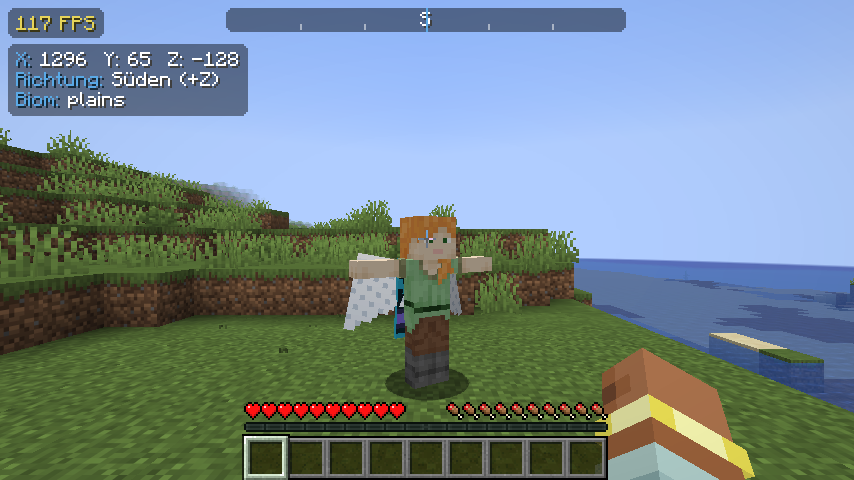
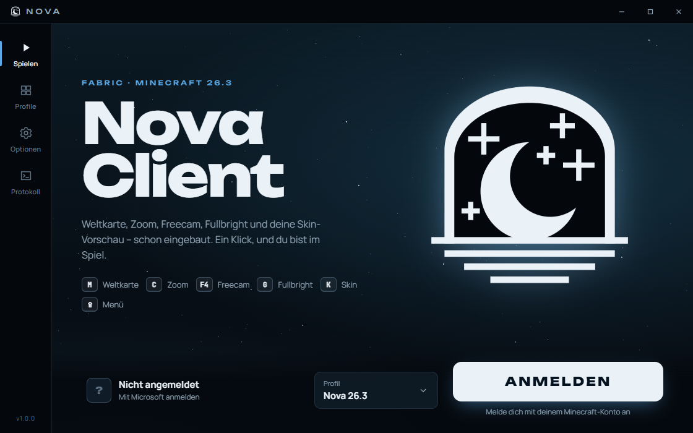
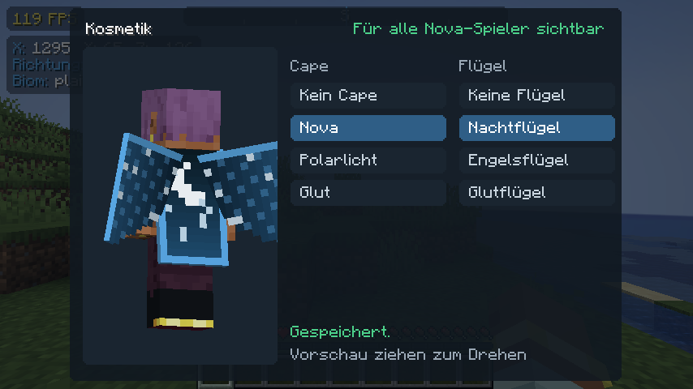
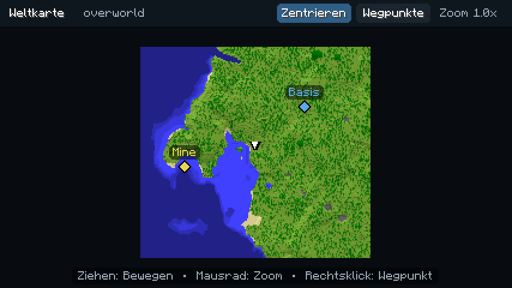
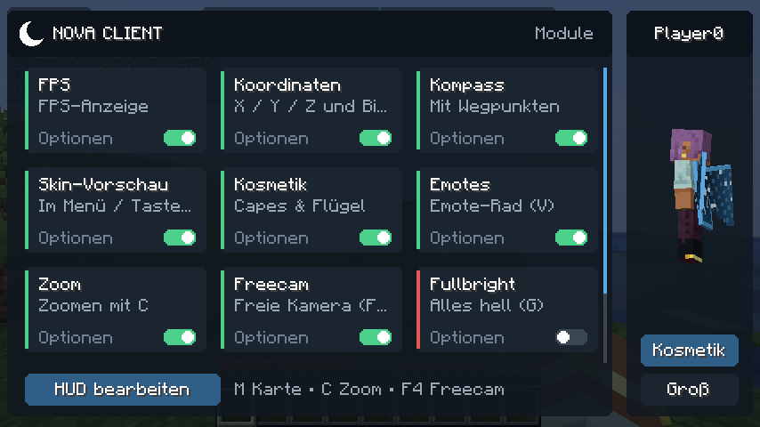
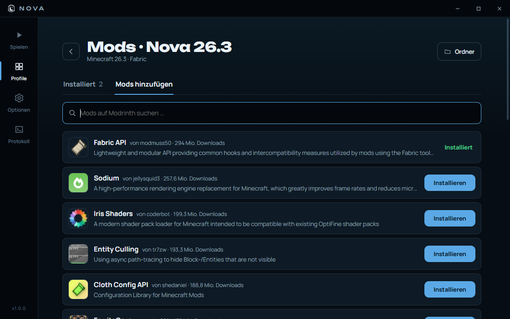
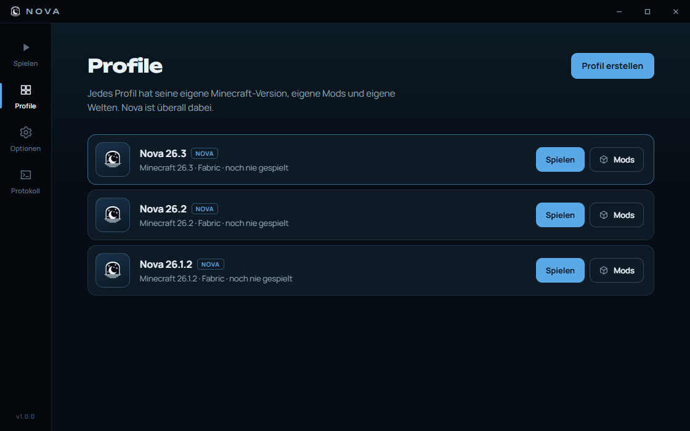
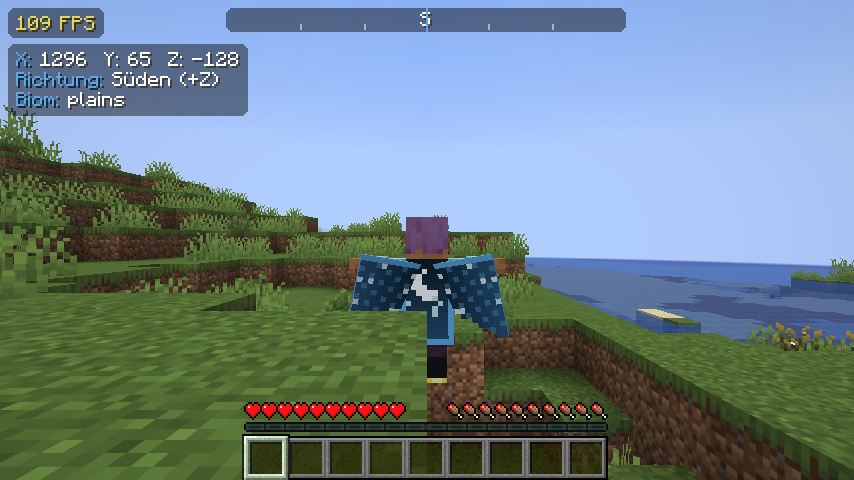

Emotes, die andere sehen
Drück V und wähl ein Emote – zum Start die T-Pose. Alle anderen Nova-Spieler sehen es live. Sobald du dich bewegst, endet es von selbst.

Fabric · Minecraft 26.1 – 26.3
Ein Client für klare Nächte: Weltkarte, Zoom, Freecam, Fullbright, Emotes, Capes und Flügel – und ein eigener Launcher, der alles mit einem Klick startet.

Funktionen
Nova läuft als Fabric-Mod und funktioniert mit Sodium, Lithium und den meisten anderen Mods zusammen.
Drück V und wähl ein Emote – zum Start die T-Pose. Alle anderen Nova-Spieler sehen es live. Sobald du dich bewegst, endet es von selbst.

Wähle im Mod-Menü unter „Kosmetik“ ein Cape und Flügel. Die 3D-Vorschau zeigt sofort, wie es aussieht – und jeder mit Nova sieht dich so.

Nova zeichnet die Gegend auf, die du erkundest. Wegpunkte setzt du mit Rechtsklick auf der Karte oder mit B – ein Kompass oben zeigt dir den Weg. Stirbst du, merkt sich Nova die Stelle.

Mit ⇧ öffnest du das Mod-Menü: jedes Modul an- und ausschalten, Optionen anpassen, HUD frei verschieben. Daneben steht deine Figur zum Drehen.

Nova Launcher
Der Launcher lädt Minecraft, Java, Fabric und Nova selbst herunter und hält alles aktuell. Mit Profilen spielst du verschiedene Versionen und Mod-Sammlungen getrennt – Mods findest du direkt über Modrinth.



Sicherheit
Du meldest dich in einem Fenster von Microsoft selbst an. Dein Passwort sieht der Launcher nie.
Der Launcher prüft bei Minecraft, ob dein Konto das Spiel besitzt. Ohne Kauf kein Start – es gibt keinen Offline-Modus.
Die Anmeldung wird mit deinem Windows-Konto verschlüsselt gespeichert und an niemanden weitergegeben.
Download
Der Launcher wartet auf die Freigabe der Anmeldung
Sobald die Microsoft-Anmeldung freigeschaltet ist, findest du den Installer hier.
Nova Launcher is a Windows launcher for Nova Client, a client-side Fabric mod for Minecraft: Java Edition. Players sign in with their own Microsoft account in Microsoft's official sign-in window (authorization code flow with PKCE).
Before the game can start, the launcher verifies game ownership through the Minecraft services API. There is no offline mode and no way to bypass authentication. Game files are downloaded only from Mojang's official servers; sign-in tokens are stored encrypted on the player's PC and never sent to third parties.